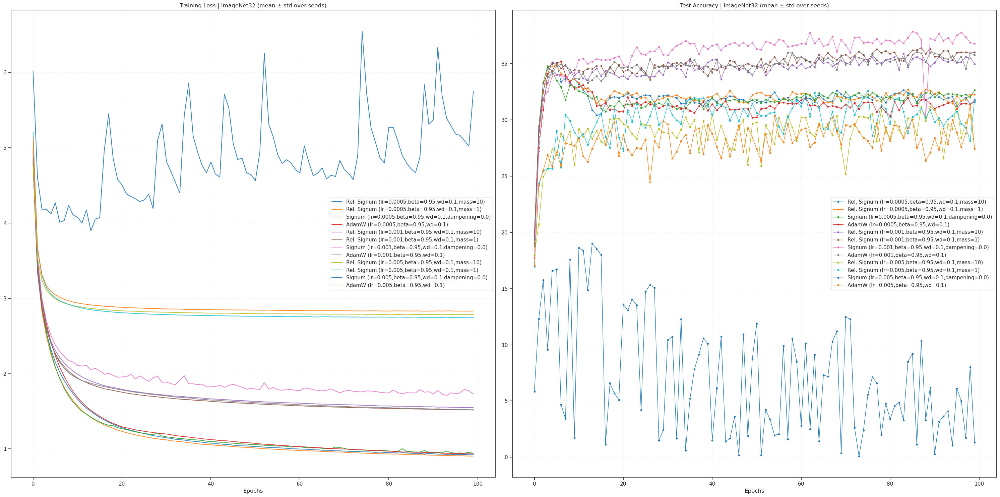
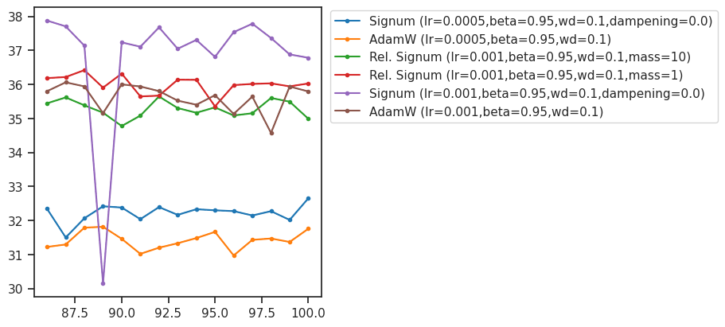
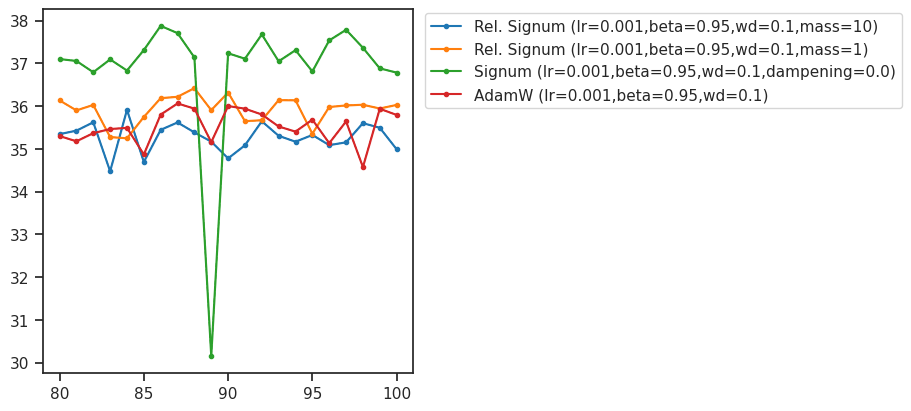
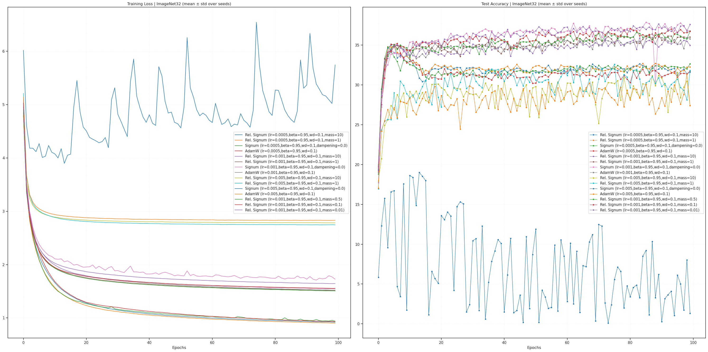
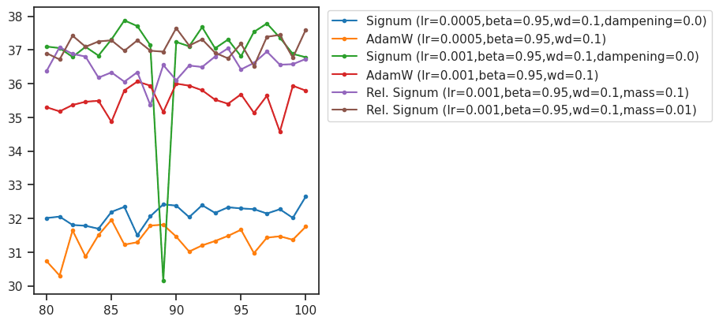

GRA: signum imgnet (resnet)#
project = GRA, host = chewie, device = cuda:1
Goals:#
# HIDE CODE
def _plot(results, intvl=slice(-21, None), smooth=None, ylim=None, figsize=(9, 4), dpi=100):
fig, ax = create_figure(1, 1, figsize=figsize, dpi=dpi)
for i, (k, d) in enumerate(results.items()):
color = f"C{i}"
mu = d['test_acc'].mean(0)
sd = d['test_acc'].std(0)
if smooth is not None:
mu = smooth_savgol(mu, smooth, polyorder=3)
sd = smooth_savgol(sd, smooth, polyorder=3)
xs = np.arange(1, len(mu) + 1)
xs = xs[intvl]
mu = mu[intvl]
sd = sd[intvl]
ax.plot(xs, mu + sd, color=color, ls='--', lw=0.8, alpha=1.0)
ax.plot(xs, mu, color=color, label=k, marker='.')
ax.plot(xs, mu - sd, color=color, ls='--', lw=0.8, alpha=1.0)
plt.fill_between(xs, mu - sd, mu + sd, color=color, alpha=0.1)
if ylim is not None:
ax.set(ylim=ylim)
ax.legend()
move_legend(ax, (1.01, 1.01))
plt.show()
return
device_idx = 1
device = f'cuda:{device_idx}'
print(f"device: {device} ——— host: {os.uname().nodename}")
device: cuda:1 ——— host: chewie
Main#
from optimizers import *
from test.test import *
ImageNet32#
batch_size=256
cfg = TrainConfig(
dataset='ImageNet32',
batch_size=512,
epochs=100,
device=device,
data_on_device=True,
verbose=True,
amp=False,
)
Signum#
experiments = []
for lr in [5e-4, 1e-3, 5e-3]:
for beta1 in [0.95]:
for weight_decay in [0.1]:
opt_kws = dict(lr=lr, momentum=beta1, weight_decay=weight_decay)
base_str = f"lr={lr},beta={beta1},wd={weight_decay}"
experiments.extend([
Experiment(
name=f'Rel. Signum ({base_str},mass=10)',
opt_fn=make_opt(RelativisticSignum, mass=10, **opt_kws)),
# Experiment(
# name=f'Rel. Signum ({base_str},mass=5)',
# opt_fn=make_opt(RelativisticSignum, mass=5, **opt_kws)),
Experiment(
name=f'Rel. Signum ({base_str},mass=1)',
opt_fn=make_opt(RelativisticSignum, mass=1, **opt_kws)),
# Experiment(
# name=f'Rel. Signum ({base_str},mass=0.1)',
# opt_fn=make_opt(RelativisticSignum, mass=0.1, **opt_kws)),
Experiment(
name=f'Signum ({base_str},dampening=0.0)',
opt_fn=make_opt(SignSGD, dampening=0.0, **opt_kws)),
# Experiment(
# name=f'Signum ({base_str},dampening=0.1)',
# opt_fn=make_opt(SignSGD, dampening=0.1, **opt_kws)),
# Experiment(
# name=f'Signum ({base_str},dampening=0.5)',
# opt_fn=make_opt(SignSGD, dampening=0.5, **opt_kws)),
Experiment(
name=f'AdamW ({base_str})',
opt_fn=make_opt(torch.optim.AdamW, lr=lr,
betas=(beta1, beta1),
weight_decay=weight_decay)),
])
print(len(experiments))
12
print(experiments)
[ Experiment( name='Rel. Signum (lr=0.0005,beta=0.95,wd=0.1,mass=10)', opt_fn=<function make_opt.<locals>._fn at 0x716a6626e3e0> ), Experiment( name='Rel. Signum (lr=0.0005,beta=0.95,wd=0.1,mass=1)', opt_fn=<function make_opt.<locals>._fn at 0x716a6626e340> ), Experiment( name='Signum (lr=0.0005,beta=0.95,wd=0.1,dampening=0.0)', opt_fn=<function make_opt.<locals>._fn at 0x716a6626e480> ), Experiment( name='AdamW (lr=0.0005,beta=0.95,wd=0.1)', opt_fn=<function make_opt.<locals>._fn at 0x716a6626e520> ), Experiment( name='Rel. Signum (lr=0.001,beta=0.95,wd=0.1,mass=10)', opt_fn=<function make_opt.<locals>._fn at 0x716a6626e5c0> ), Experiment( name='Rel. Signum (lr=0.001,beta=0.95,wd=0.1,mass=1)', opt_fn=<function make_opt.<locals>._fn at 0x716a6626e660> ), Experiment( name='Signum (lr=0.001,beta=0.95,wd=0.1,dampening=0.0)', opt_fn=<function make_opt.<locals>._fn at 0x716a6626e700> ), Experiment( name='AdamW (lr=0.001,beta=0.95,wd=0.1)', opt_fn=<function make_opt.<locals>._fn at 0x716a6626e7a0> ), Experiment( name='Rel. Signum (lr=0.005,beta=0.95,wd=0.1,mass=10)', opt_fn=<function make_opt.<locals>._fn at 0x716a6626e840> ), Experiment( name='Rel. Signum (lr=0.005,beta=0.95,wd=0.1,mass=1)', opt_fn=<function make_opt.<locals>._fn at 0x716a6626e8e0> ), Experiment( name='Signum (lr=0.005,beta=0.95,wd=0.1,dampening=0.0)', opt_fn=<function make_opt.<locals>._fn at 0x716a6626e980> ), Experiment( name='AdamW (lr=0.005,beta=0.95,wd=0.1)', opt_fn=<function make_opt.<locals>._fn at 0x716a6626ea20> ) ]
%%time
results = run_experiments(
experiments,
cfg=cfg,
model_class=ResNet18,
seeds=[0],
)
--- Training (ImageNet32) --- Model: ResNet18 | seed=0 Optimizer: RelativisticSignum
RelativisticSignum ( Parameter Group 0 lr: 0.0005 mass: 10 momentum: 0.95 weight_decay: 0.1 )
Epoch 1/100: Train Loss 4.7883 | Test Acc 19.40%
Epoch 5/100: Train Loss 2.3224 | Test Acc 35.00%
Epoch 10/100: Train Loss 1.7325 | Test Acc 33.64%
Epoch 15/100: Train Loss 1.4562 | Test Acc 30.43%
Epoch 20/100: Train Loss 1.3030 | Test Acc 31.97%
Epoch 25/100: Train Loss 1.2159 | Test Acc 32.09%
Epoch 30/100: Train Loss 1.1571 | Test Acc 32.14%
Epoch 35/100: Train Loss 1.1168 | Test Acc 31.46%
Epoch 40/100: Train Loss 1.0816 | Test Acc 31.72%
Epoch 45/100: Train Loss 1.0576 | Test Acc 32.13%
Epoch 50/100: Train Loss 1.0349 | Test Acc 31.75%
Epoch 55/100: Train Loss 1.0187 | Test Acc 32.47%
Epoch 60/100: Train Loss 1.0014 | Test Acc 31.86%
Epoch 65/100: Train Loss 0.9878 | Test Acc 32.20%
Epoch 70/100: Train Loss 0.9747 | Test Acc 32.30%
Epoch 75/100: Train Loss 0.9613 | Test Acc 32.06%
Epoch 80/100: Train Loss 0.9542 | Test Acc 31.57%
Epoch 85/100: Train Loss 0.9475 | Test Acc 32.42%
Epoch 90/100: Train Loss 0.9396 | Test Acc 32.01%
Epoch 95/100: Train Loss 0.9283 | Test Acc 32.08%
Epoch 100/100: Train Loss 0.9214 | Test Acc 31.61%
Finished in 16195.2s
--- Training (ImageNet32) --- Model: ResNet18 | seed=0 Optimizer: RelativisticSignum
RelativisticSignum ( Parameter Group 0 lr: 0.0005 mass: 1 momentum: 0.95 weight_decay: 0.1 )
Epoch 1/100: Train Loss 4.8620 | Test Acc 20.00%
Epoch 5/100: Train Loss 2.2618 | Test Acc 34.78%
Epoch 10/100: Train Loss 1.6403 | Test Acc 33.64%
Epoch 15/100: Train Loss 1.3826 | Test Acc 31.48%
Epoch 20/100: Train Loss 1.2506 | Test Acc 32.41%
Epoch 25/100: Train Loss 1.1753 | Test Acc 31.94%
Epoch 30/100: Train Loss 1.1247 | Test Acc 31.95%
Epoch 35/100: Train Loss 1.0904 | Test Acc 31.85%
Epoch 40/100: Train Loss 1.0586 | Test Acc 32.04%
Epoch 45/100: Train Loss 1.0367 | Test Acc 32.59%
Epoch 50/100: Train Loss 1.0163 | Test Acc 32.22%
Epoch 55/100: Train Loss 0.9978 | Test Acc 31.73%
Epoch 60/100: Train Loss 0.9816 | Test Acc 32.29%
Epoch 65/100: Train Loss 0.9703 | Test Acc 32.01%
Epoch 70/100: Train Loss 0.9587 | Test Acc 32.02%
Epoch 75/100: Train Loss 0.9457 | Test Acc 31.94%
Epoch 80/100: Train Loss 0.9345 | Test Acc 32.38%
Epoch 85/100: Train Loss 0.9257 | Test Acc 32.72%
Epoch 90/100: Train Loss 0.9178 | Test Acc 32.59%
Epoch 95/100: Train Loss 0.9121 | Test Acc 31.46%
Epoch 100/100: Train Loss 0.9048 | Test Acc 32.28%
Finished in 16202.6s
--- Training (ImageNet32) --- Model: ResNet18 | seed=0 Optimizer: SignSGD
SignSGD ( Parameter Group 0 dampening: 0.0 lr: 0.0005 momentum: 0.95 weight_decay: 0.1 )
Epoch 1/100: Train Loss 4.9133 | Test Acc 18.80%
Epoch 5/100: Train Loss 2.2896 | Test Acc 34.31%
Epoch 10/100: Train Loss 1.6217 | Test Acc 32.95%
Epoch 15/100: Train Loss 1.3876 | Test Acc 32.05%
Epoch 20/100: Train Loss 1.2829 | Test Acc 31.67%
Epoch 25/100: Train Loss 1.2157 | Test Acc 31.09%
Epoch 30/100: Train Loss 1.1729 | Test Acc 31.30%
Epoch 35/100: Train Loss 1.1341 | Test Acc 31.02%
Epoch 40/100: Train Loss 1.1030 | Test Acc 31.41%
Epoch 45/100: Train Loss 1.0788 | Test Acc 31.74%
Epoch 50/100: Train Loss 1.0579 | Test Acc 31.78%
Epoch 55/100: Train Loss 1.0430 | Test Acc 31.59%
Epoch 60/100: Train Loss 1.0291 | Test Acc 32.05%
Epoch 65/100: Train Loss 1.0144 | Test Acc 32.38%
Epoch 70/100: Train Loss 1.0173 | Test Acc 31.71%
Epoch 75/100: Train Loss 0.9852 | Test Acc 32.07%
Epoch 80/100: Train Loss 0.9799 | Test Acc 32.02%
Epoch 85/100: Train Loss 0.9688 | Test Acc 32.20%
Training time:
ImageNet32: ???CIFAR10: ???MNIST: 17h 31s
save_obj(results, file_name='ImageNet32_results_jan04.npy', save_dir=tmp_dir)
avg_scores = {k: np.round(d['test_acc'].mean(0)[-5:].mean(), decimals=2) for k, d in results.items()}
avg_scores = dict(sorted(avg_scores.items(), key=lambda t: t[1]))
avg_scores
{'Signum (lr=0.005,beta=0.95,wd=0.1,dampening=0.0)': 4.44,
'AdamW (lr=0.005,beta=0.95,wd=0.1)': 28.81,
'Rel. Signum (lr=0.005,beta=0.95,wd=0.1,mass=10)': 29.53,
'Rel. Signum (lr=0.005,beta=0.95,wd=0.1,mass=1)': 29.94,
'AdamW (lr=0.0005,beta=0.95,wd=0.1)': 31.4,
'Rel. Signum (lr=0.0005,beta=0.95,wd=0.1,mass=10)': 31.58,
'Rel. Signum (lr=0.0005,beta=0.95,wd=0.1,mass=1)': 32.03,
'Signum (lr=0.0005,beta=0.95,wd=0.1,dampening=0.0)': 32.28,
'Rel. Signum (lr=0.001,beta=0.95,wd=0.1,mass=10)': 35.27,
'AdamW (lr=0.001,beta=0.95,wd=0.1)': 35.42,
'Rel. Signum (lr=0.001,beta=0.95,wd=0.1,mass=1)': 36.0,
'Signum (lr=0.001,beta=0.95,wd=0.1,dampening=0.0)': 37.27}
plot_results(results, title="ImageNet32 (mean ± std over seeds)", figsize=(30, 15))

optimizer_names = sorted(set([
k.split('(')[0].strip()
for k in results
]))
print(optimizer_names)
['AdamW', 'Rel. Signum', 'Signum']
n_last_timepoints = 10
model_accuracies = collections.defaultdict(dict)
for k, d in results.items():
name = k.split('(')[0].strip()
acc = d['test_acc'].mean(0)[-n_last_timepoints:].mean()
model_accuracies[name][k] = acc
model_accuracies = dict(sorted(model_accuracies.items()))
model_accuracies = {
k: dict(sorted(d.items(), key=lambda t: t[1]))
for k, d in model_accuracies.items()
}
print(model_accuracies)
{ 'AdamW': { 'AdamW (lr=0.005,beta=0.95,wd=0.1)': 28.692, 'AdamW (lr=0.0005,beta=0.95,wd=0.1)': 31.3728, 'AdamW (lr=0.001,beta=0.95,wd=0.1)': 35.544 }, 'Rel. Signum': { 'Rel. Signum (lr=0.005,beta=0.95,wd=0.1,mass=10)': 29.386600000000005, 'Rel. Signum (lr=0.005,beta=0.95,wd=0.1,mass=1)': 29.961199999999998, 'Rel. Signum (lr=0.0005,beta=0.95,wd=0.1,mass=10)': 31.816399999999998, 'Rel. Signum (lr=0.0005,beta=0.95,wd=0.1,mass=1)': 32.014, 'Rel. Signum (lr=0.001,beta=0.95,wd=0.1,mass=10)': 35.28600000000001, 'Rel. Signum (lr=0.001,beta=0.95,wd=0.1,mass=1)': 35.89500000000001 }, 'Signum': { 'Signum (lr=0.005,beta=0.95,wd=0.1,dampening=0.0)': 3.4453999999999994, 'Signum (lr=0.0005,beta=0.95,wd=0.1,dampening=0.0)': 32.262, 'Signum (lr=0.001,beta=0.95,wd=0.1,dampening=0.0)': 37.230000000000004 } }
print({k: np.mean(list(d.values())) for k, d in model_accuracies.items()})
{'AdamW': 31.869600000000002, 'Rel. Signum': 32.3932, 'Signum': 24.312466666666666}
n_top_fits = 2
best_n_models = {
k: dict(list(d.items())[-n_top_fits:])
for k, d in model_accuracies.items()
}
print(best_n_models)
{ 'AdamW': {'AdamW (lr=0.0005,beta=0.95,wd=0.1)': 31.3728, 'AdamW (lr=0.001,beta=0.95,wd=0.1)': 35.544}, 'Rel. Signum': { 'Rel. Signum (lr=0.001,beta=0.95,wd=0.1,mass=10)': 35.28600000000001, 'Rel. Signum (lr=0.001,beta=0.95,wd=0.1,mass=1)': 35.89500000000001 }, 'Signum': { 'Signum (lr=0.0005,beta=0.95,wd=0.1,dampening=0.0)': 32.262, 'Signum (lr=0.001,beta=0.95,wd=0.1,dampening=0.0)': 37.230000000000004 } }
best_n_models_strings = [x for d in best_n_models.values() for x in list(d)]
selected_results = {
k: v for k, v in results.items()
if k in best_n_models_strings
}
_plot(selected_results, intvl=slice(-15, None))

selected_results = {
k: v for k, v in results.items()
if 'lr=0.001,beta=0.95' in k
}
_plot(selected_results, intvl=slice(-21, None))

experiments = []
for lr in [1e-3]:
for beta1 in [0.95]:
for weight_decay in [0.1]:
opt_kws = dict(lr=lr, momentum=beta1, weight_decay=weight_decay)
base_str = f"lr={lr},beta={beta1},wd={weight_decay}"
experiments.extend([
Experiment(
name=f'Rel. Signum ({base_str},mass=0.5)',
opt_fn=make_opt(RelativisticSignum, mass=0.5, **opt_kws)),
Experiment(
name=f'Rel. Signum ({base_str},mass=0.1)',
opt_fn=make_opt(RelativisticSignum, mass=0.1, **opt_kws)),
Experiment(
name=f'Rel. Signum ({base_str},mass=0.01)',
opt_fn=make_opt(RelativisticSignum, mass=0.01, **opt_kws)),
])
print(len(experiments))
3
%%time
results_new = run_experiments(
experiments,
cfg=cfg,
model_class=ResNet18,
seeds=[0],
)
--- Training (ImageNet32) --- Model: ResNet18 | seed=0 Optimizer: RelativisticSignum
RelativisticSignum ( Parameter Group 0 lr: 0.001 mass: 0.5 momentum: 0.95 weight_decay: 0.1 )
Epoch 1/100: Train Loss 4.9798 | Test Acc 19.35%
Epoch 5/100: Train Loss 2.3936 | Test Acc 34.57%
Epoch 10/100: Train Loss 1.9728 | Test Acc 34.67%
Epoch 15/100: Train Loss 1.8267 | Test Acc 34.71%
Epoch 20/100: Train Loss 1.7540 | Test Acc 34.09%
Epoch 25/100: Train Loss 1.7062 | Test Acc 34.84%
Epoch 30/100: Train Loss 1.6727 | Test Acc 34.84%
Epoch 35/100: Train Loss 1.6461 | Test Acc 34.23%
Epoch 40/100: Train Loss 1.6259 | Test Acc 35.60%
Epoch 45/100: Train Loss 1.6100 | Test Acc 34.52%
Epoch 50/100: Train Loss 1.5903 | Test Acc 35.01%
Epoch 55/100: Train Loss 1.5780 | Test Acc 35.40%
Epoch 60/100: Train Loss 1.5684 | Test Acc 35.75%
Epoch 65/100: Train Loss 1.5559 | Test Acc 35.84%
Epoch 70/100: Train Loss 1.5477 | Test Acc 36.22%
Epoch 75/100: Train Loss 1.5398 | Test Acc 36.16%
Epoch 80/100: Train Loss 1.5306 | Test Acc 36.02%
Epoch 85/100: Train Loss 1.5263 | Test Acc 36.00%
Epoch 90/100: Train Loss 1.5185 | Test Acc 36.37%
Epoch 95/100: Train Loss 1.5114 | Test Acc 36.38%
Epoch 100/100: Train Loss 1.5084 | Test Acc 36.75%
Finished in 16202.7s
--- Training (ImageNet32) --- Model: ResNet18 | seed=0 Optimizer: RelativisticSignum
RelativisticSignum ( Parameter Group 0 lr: 0.001 mass: 0.1 momentum: 0.95 weight_decay: 0.1 )
Epoch 1/100: Train Loss 5.0296 | Test Acc 19.22%
Epoch 5/100: Train Loss 2.3947 | Test Acc 34.24%
Epoch 10/100: Train Loss 1.9839 | Test Acc 34.37%
Epoch 15/100: Train Loss 1.8520 | Test Acc 35.33%
Epoch 20/100: Train Loss 1.7910 | Test Acc 35.20%
Epoch 25/100: Train Loss 1.7471 | Test Acc 35.69%
Epoch 30/100: Train Loss 1.7134 | Test Acc 36.09%
Epoch 35/100: Train Loss 1.6879 | Test Acc 35.97%
Epoch 40/100: Train Loss 1.6688 | Test Acc 35.65%
Epoch 45/100: Train Loss 1.6499 | Test Acc 34.77%
Epoch 50/100: Train Loss 1.6337 | Test Acc 35.54%
Epoch 55/100: Train Loss 1.6218 | Test Acc 36.58%
Epoch 60/100: Train Loss 1.6126 | Test Acc 36.03%
Epoch 65/100: Train Loss 1.6020 | Test Acc 36.46%
Epoch 70/100: Train Loss 1.5928 | Test Acc 35.87%
Epoch 75/100: Train Loss 1.5843 | Test Acc 36.42%
Epoch 80/100: Train Loss 1.5781 | Test Acc 36.38%
Epoch 85/100: Train Loss 1.5696 | Test Acc 36.33%
Epoch 90/100: Train Loss 1.5659 | Test Acc 36.10%
Epoch 95/100: Train Loss 1.5591 | Test Acc 36.42%
Epoch 100/100: Train Loss 1.5546 | Test Acc 36.73%
Finished in 16192.0s
--- Training (ImageNet32) --- Model: ResNet18 | seed=0 Optimizer: RelativisticSignum
RelativisticSignum ( Parameter Group 0 lr: 0.001 mass: 0.01 momentum: 0.95 weight_decay: 0.1 )
Epoch 1/100: Train Loss 5.0193 | Test Acc 19.27%
Epoch 5/100: Train Loss 2.4396 | Test Acc 34.45%
Epoch 10/100: Train Loss 2.0581 | Test Acc 33.85%
Epoch 15/100: Train Loss 1.9415 | Test Acc 35.49%
Epoch 20/100: Train Loss 1.8793 | Test Acc 35.47%
Epoch 25/100: Train Loss 1.8343 | Test Acc 36.15%
Epoch 30/100: Train Loss 1.8054 | Test Acc 35.29%
Epoch 35/100: Train Loss 1.7779 | Test Acc 36.33%
Epoch 40/100: Train Loss 1.7563 | Test Acc 36.31%
Epoch 45/100: Train Loss 1.7381 | Test Acc 36.42%
Epoch 50/100: Train Loss 1.7241 | Test Acc 36.60%
Epoch 55/100: Train Loss 1.7115 | Test Acc 36.88%
Epoch 60/100: Train Loss 1.6997 | Test Acc 37.22%
Epoch 65/100: Train Loss 1.6912 | Test Acc 36.99%
Epoch 70/100: Train Loss 1.6811 | Test Acc 36.78%
Epoch 75/100: Train Loss 1.6746 | Test Acc 37.12%
Epoch 80/100: Train Loss 1.6672 | Test Acc 36.90%
Epoch 85/100: Train Loss 1.6594 | Test Acc 37.29%
Epoch 90/100: Train Loss 1.6526 | Test Acc 37.65%
Epoch 95/100: Train Loss 1.6485 | Test Acc 37.19%
Epoch 100/100: Train Loss 1.6454 | Test Acc 37.60%
Finished in 16184.4s
CPU times: user 13h 29min 28s, sys: 1min 25s, total: 13h 30min 54s
Wall time: 13h 29min 58s
combined = results | results_new
save_obj(combined, file_name='ImageNet32_results_jan06.npy', save_dir=tmp_dir)
[PROGRESS] 'ImageNet32_results_jan06.npy' saved at /home/hadi/Dropbox/git/jb-progress-2025/tmp
plot_results(combined, title="ImageNet32 (mean ± std over seeds)", figsize=(30, 15))

n_last_timepoints = 10
model_accuracies = collections.defaultdict(dict)
for k, d in combined.items():
name = k.split('(')[0].strip()
acc = d['test_acc'].mean(0)[-n_last_timepoints:].mean()
model_accuracies[name][k] = acc
model_accuracies = dict(sorted(model_accuracies.items()))
model_accuracies = {
k: dict(sorted(d.items(), key=lambda t: t[1]))
for k, d in model_accuracies.items()
}
print(model_accuracies)
{ 'AdamW': { 'AdamW (lr=0.005,beta=0.95,wd=0.1)': 28.692, 'AdamW (lr=0.0005,beta=0.95,wd=0.1)': 31.3728, 'AdamW (lr=0.001,beta=0.95,wd=0.1)': 35.544 }, 'Rel. Signum': { 'Rel. Signum (lr=0.005,beta=0.95,wd=0.1,mass=10)': 29.386600000000005, 'Rel. Signum (lr=0.005,beta=0.95,wd=0.1,mass=1)': 29.961199999999998, 'Rel. Signum (lr=0.0005,beta=0.95,wd=0.1,mass=10)': 31.816399999999998, 'Rel. Signum (lr=0.0005,beta=0.95,wd=0.1,mass=1)': 32.014, 'Rel. Signum (lr=0.001,beta=0.95,wd=0.1,mass=10)': 35.28600000000001, 'Rel. Signum (lr=0.001,beta=0.95,wd=0.1,mass=1)': 35.89500000000001, 'Rel. Signum (lr=0.001,beta=0.95,wd=0.1,mass=0.5)': 36.13080000000001, 'Rel. Signum (lr=0.001,beta=0.95,wd=0.1,mass=0.1)': 36.6742, 'Rel. Signum (lr=0.001,beta=0.95,wd=0.1,mass=0.01)': 37.1022 }, 'Signum': { 'Signum (lr=0.005,beta=0.95,wd=0.1,dampening=0.0)': 3.4453999999999994, 'Signum (lr=0.0005,beta=0.95,wd=0.1,dampening=0.0)': 32.262, 'Signum (lr=0.001,beta=0.95,wd=0.1,dampening=0.0)': 37.230000000000004 } }
print({k: np.mean(list(d.values())) for k, d in model_accuracies.items()})
{'AdamW': 31.869600000000002, 'Rel. Signum': 33.80737777777778, 'Signum': 24.312466666666666}
n_top_fits = 2
best_n_models = {
k: dict(list(d.items())[-n_top_fits:])
for k, d in model_accuracies.items()
}
print(best_n_models)
{ 'AdamW': {'AdamW (lr=0.0005,beta=0.95,wd=0.1)': 31.3728, 'AdamW (lr=0.001,beta=0.95,wd=0.1)': 35.544}, 'Rel. Signum': { 'Rel. Signum (lr=0.001,beta=0.95,wd=0.1,mass=0.1)': 36.6742, 'Rel. Signum (lr=0.001,beta=0.95,wd=0.1,mass=0.01)': 37.1022 }, 'Signum': { 'Signum (lr=0.0005,beta=0.95,wd=0.1,dampening=0.0)': 32.262, 'Signum (lr=0.001,beta=0.95,wd=0.1,dampening=0.0)': 37.230000000000004 } }
best_n_models_strings = [x for d in best_n_models.values() for x in list(d)]
selected_results = {
k: v for k, v in combined.items()
if k in best_n_models_strings
}
_plot(selected_results, intvl=slice(-21, None))

experiments = []
for lr in [1e-3]:
for beta1 in [0.95]:
for weight_decay in [0.1]:
opt_kws = dict(lr=lr, momentum=beta1, weight_decay=weight_decay)
base_str = f"lr={lr},beta={beta1},wd={weight_decay}"
experiments.extend([
Experiment(
name=f'Rel. Signum ({base_str},mass=0.01)',
opt_fn=make_opt(RelativisticSignum, mass=0.01, **opt_kws)),
Experiment(
name=f'Rel. Signum ({base_str},mass=0.001)',
opt_fn=make_opt(RelativisticSignum, mass=0.001, **opt_kws)),
Experiment(
name=f'Signum ({base_str},dampening=0.05)',
opt_fn=make_opt(SignSGD, dampening=0.05, **opt_kws)),
])
print(len(experiments))
3
%%time
results_with_seed = run_experiments(
experiments,
cfg=cfg,
model_class=ResNet18,
seeds=[0, 1, 2, 3],
)
--- Training (ImageNet32) --- Model: ResNet18 | seed=0 Optimizer: RelativisticSignum
RelativisticSignum ( Parameter Group 0 lr: 0.001 mass: 0.01 momentum: 0.95 weight_decay: 0.1 )
Epoch 1/100: Train Loss 5.0193 | Test Acc 19.27%
Epoch 5/100: Train Loss 2.4396 | Test Acc 34.45%
Epoch 10/100: Train Loss 2.0581 | Test Acc 33.85%
Epoch 15/100: Train Loss 1.9415 | Test Acc 35.49%
Epoch 20/100: Train Loss 1.8793 | Test Acc 35.47%
Epoch 25/100: Train Loss 1.8343 | Test Acc 36.15%
Epoch 30/100: Train Loss 1.8054 | Test Acc 35.29%
Epoch 35/100: Train Loss 1.7779 | Test Acc 36.33%
Epoch 40/100: Train Loss 1.7563 | Test Acc 36.31%
Epoch 45/100: Train Loss 1.7381 | Test Acc 36.42%
Epoch 50/100: Train Loss 1.7241 | Test Acc 36.60%
Epoch 55/100: Train Loss 1.7115 | Test Acc 36.88%
Epoch 60/100: Train Loss 1.6997 | Test Acc 37.22%
Epoch 65/100: Train Loss 1.6912 | Test Acc 36.99%
results_final = combined | results_with_seed
save_obj(results_final, file_name='ImageNet32_results_jan08.npy', save_dir=tmp_dir)
plot_results(results_final, title="ImageNet32 (mean ± std over seeds)", figsize=(30, 15))